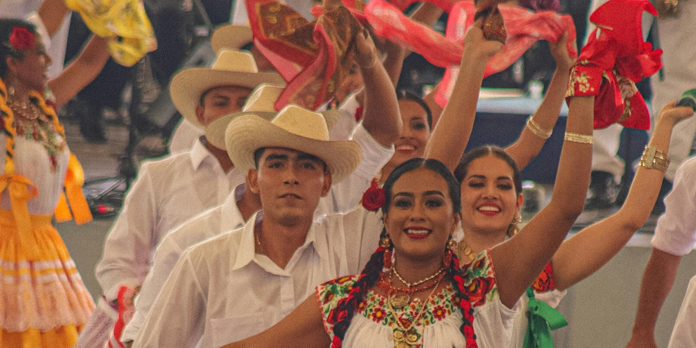

La Máxima Fiesta de Oaxaca
La Guelaguetza, que significa 'ofrenda' o 'intercambio' en zapoteco, es una celebración ancestral donde las ocho regiones de Oaxaca comparten sus danzas, música y tradiciones únicas. ¡Una explosión de color y cultura viva!